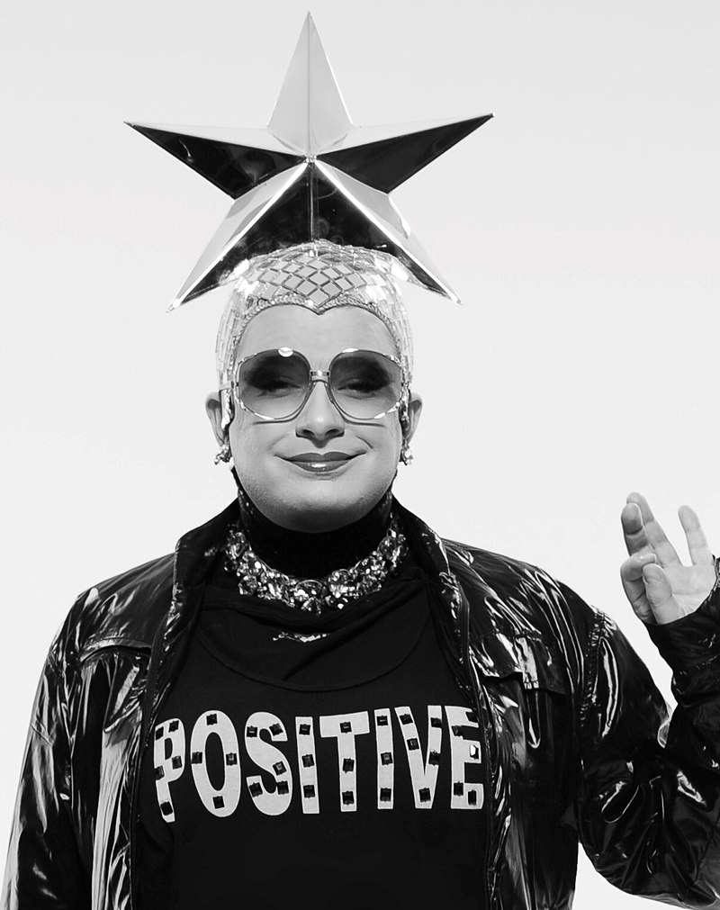

Вєрка Сердючка — центральний сценічний образ творчості Андрія Данилка, який він придумав і створив у 1991 році.
За словами автора, Вєрка Сердючка — це арт-персонаж, через який він розповідає про себе
Прообраз з'явився 1989 року в полтавській театральній студії «Гротеск».
